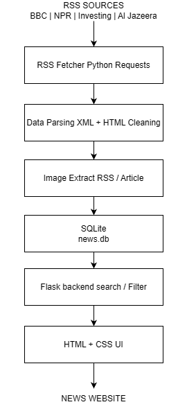

Web Scraper News Aggregator
A web-based news aggregation system developed to collect, organize, store, and display news articles from multiple RSS sources in a single platform. The project combines Python-based data collection with Flask, SQLite, HTML, and CSS to create a simple and structured news website.
How It Works

- The system collects news from multiple RSS feeds, including Finance, General News, and World News.
- Python processes each RSS feed and extracts important information such as the title, article URL, publication date, category, description, and image.
- HTML content contained in article descriptions is cleaned before the information is stored in the database.
- The system attempts to retrieve article images from RSS metadata and Open Graph or Twitter Card metadata when an image is not directly provided by the RSS feed.
- Collected news is stored in an SQLite database. Duplicate articles are prevented using the article URL as a unique identifier.
- A Flask web application retrieves the stored data and presents the articles through a responsive web interface.
News Sources
The system is designed to collect information from multiple international news sources and organize them into categories.
- Finance — Investing.com
- General News — BBC News, NPR
- World News — BBC World, Al Jazeera, The Guardian, France 24, Deutsche Welle
Key Features
- Multi-source RSS Collection — Collects news from multiple RSS feeds automatically.
- News Categorization — Organizes articles into Finance, General News, and World News.
- SQLite Database — Stores collected articles locally and prevents duplicate URLs.
- Search — Allows users to search for articles using keywords in the title or description.
- Category Filter — Allows users to display news from a specific category.
- Article Images — Extracts available images from RSS metadata or article pages.
- Automatic News Update — The backend periodically checks RSS feeds for new articles.
System Architecture
The system is divided into several layers. The data collection layer uses Python and RSS feeds to retrieve news. The processing layer cleans and prepares the collected information before storing it in SQLite. The Flask application then retrieves the data and sends it to the HTML interface for users to browse and search.
- Data Source — RSS feeds from multiple news providers.
- Data Collection — Python requests and XML parsing.
- Data Processing — HTML cleaning, image extraction, and data formatting.
- Database — SQLite for structured news storage.
- Backend — Flask handles requests, filtering, searching, and database queries.
- Frontend — HTML and CSS provide the user interface.
Technical Implementation
The project was developed using Python as the main programming language. RSS feeds are retrieved using the Requests library and parsed using Python's XML processing tools.
BeautifulSoup is used to process HTML content and extract article images when image information is not directly available from the RSS feed.
Flask provides the web application backend and communicates with the SQLite database to retrieve and filter news articles.
The system also uses a scheduled background task to periodically fetch new articles without requiring the user to manually run the news collection process.
What I Learned
- Designing a complete application from data collection to web presentation.
- Working with RSS feeds and XML data structures.
- Building a relational database using SQLite.
- Connecting Python backend logic with HTML/CSS frontend components.
- Building search and category filtering using Flask and SQL queries.
- Handling missing data and different RSS formats from multiple sources.
- Using Git and GitHub for version control and project deployment.
Future Development
The current system focuses on collecting and organizing news. Future development will extend the project from a news aggregation platform into a data analysis system that can investigate the relationship between financial news and stock market data.
- Stock Market Data Integration — Integrate historical stock prices such as Open, High, Low, Close, and Volume.
- News Sentiment Analysis — Analyze whether an article expresses positive, negative, or neutral sentiment.
- Company and Entity Recognition — Automatically identify companies, organizations, and financial entities mentioned in news articles.
- News and Stock Price Visualization — Create interactive charts to compare news activity with changes in stock prices.
- Historical Data Analysis — Store and analyze larger amounts of news and financial data over time.
- AI-Based News Analysis — Use natural language processing and AI models to summarize articles and extract important information.
- Cloud Database — Migrate from SQLite to a production database such as PostgreSQL for a scalable deployment.
- Live Deployment — Deploy the Flask application to a cloud platform so the system can be accessed through a public web URL.
Project Direction
The long-term goal is to develop this project into a news-driven financial data analysis platform. Instead of only displaying news, the system could combine news content, sentiment, company information, and historical market data to provide a more comprehensive view of financial events and market behavior.